Science| 小鼠全肾单细胞测序开篇之作
原文：https://mp.weixin.qq.com/s?__biz=MzAwMzIzOTk5OQ==&mid=2247497713&idx=2&sn=554d6a4e1b28b2e5303695fae5942a34&chksm=9b3c8ea1ac4b07b72323ce25cd49474a9228ec1aaa56243f57dca3f2f668dc42ab9cd58dca21#rd 合集：单细胞教程全收录 / 文献速递
写在前面
这是一篇18年发表于《Science》的文章，其地位不用赘述，这项工作最大的意义是首次使用单细胞测序的方式解析了小鼠的肾脏，为后续试图用单细胞测序研究肾脏生理病理学的工作奠定了基础。
一、肾脏
肾脏是哺乳动物的重要器官，其集成了许多复杂功能，其中最重要的功能便是与外界的物质交换，例如氮排泄、阴阳离子溶质运输、水的重吸收，这可以维持哺乳动物机体的电解质与酸碱平衡。此外，肾脏还可以分泌激素调节血液组成与血压。肾脏不同组织结构的主要功能如下图所示。
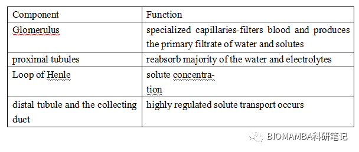
二、单细胞测序
**●**1、单细胞的优势及基本流程就不浪费篇幅了，我们已经介绍过很多文献了。
**●**2、基本数据分析
数据下机后，7个样本中一共包含了57979个细胞（其实这一测序深度在现在看来不太高）。考虑到肾脏是一个具有复杂功能并消耗大量能量的器官，作者首先评估了线粒体RNA对细胞分群的影响，结果如下图所示。从图中我们可知，mtRNA对肾脏细胞分群的种类与数量均无影响；肾脏各种类细胞的线粒体比例分布较为均衡但proximal tubule cell（PTC）与distal tubule cell（DTC）的线粒体比例与其他细胞相比明显更高。
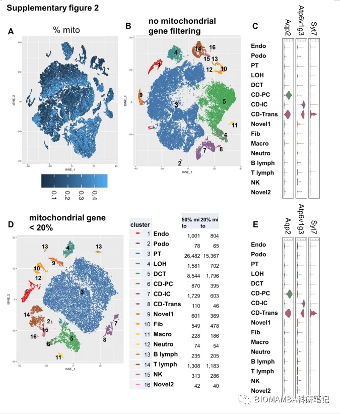
● 3、细胞注释工作
由上图可知，与大部分单细胞测序分析相似，作者在做了无数次的分群分析、多次调整应用了不同的参数后，这些细胞一共被注释到16种cluster（每种cluster都至少在4个样本中出现）。针对每一种cluster作者挑选了细胞特异性的marker gene绘制了小提琴图并使用免疫组化的方法进行验证，其中质量较好的marker为：
vascular endothelial growth factor receptor 2 (Kdr) =>endothelial cells
Nephrin (Nphs1) and Podocin (Nphs2) =>podocytes
Na/K/2Cl cotransporter (Slc12a1) =>ascending loop of Henle
thiazide sensitive sodium-chloride cotransporter (Slc12a3) =>****
distal convoluted tubule
Cdkn1c and Bcam =>podocytes
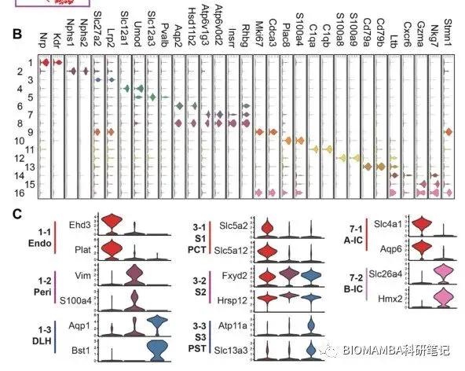
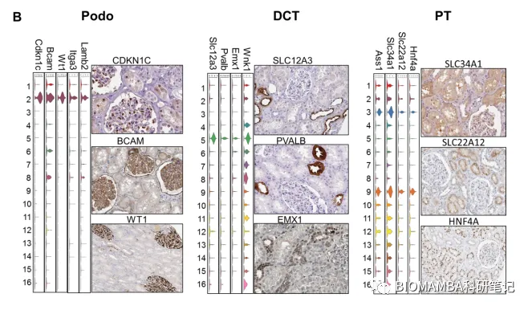
为了确保细胞注释万无一失，作者将ScRNA-Seq数据与显微切割后的bulk RNA-Seq联系起来做了相关性分析。结果如下列热图所示，可以看出ScRNA-Seq的注释结果与bulk RNA-Seq结果高度吻合。不仅如此，作者利用Nphs2CremT/mG, SclCremT/mG和dh16CremT/mG三种带有绿色荧光标记（green fluorescent protein (GFP)的模式小鼠样本用于标记mark podocytes, endothelium and tubule cells，从而进一步确定这三类细胞的注释情况。这些实验与分析手段也保证了最后的注释结果真实可靠，可供后续研究人员参考。
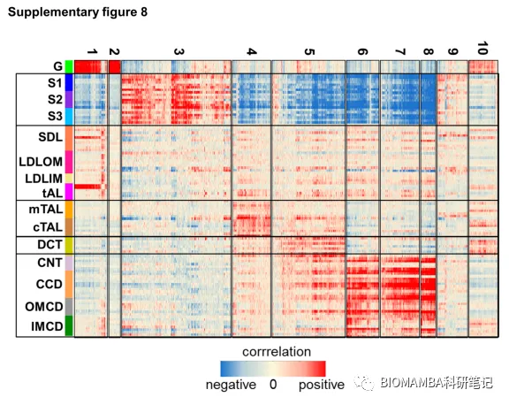
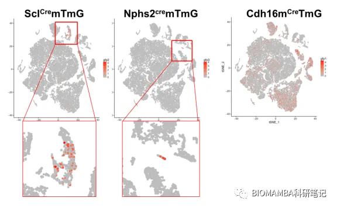
在肾脏的诸多细胞类型中collecting duct cell（CDC）是一个很特殊的存在，其是由ureteric bud发育而来而不是metanephric mesenchyme，加之其亚型在功能上的特殊性（principal cell 参与水、溶质重吸收、钾离子分泌；alpha与beta intercalated cells分别参与酸碱离子分泌），作者找到了aquaporin 2 (Aqp2) and H+-ATPase subunit (Atp6v1g3) 标记这两种亚型。
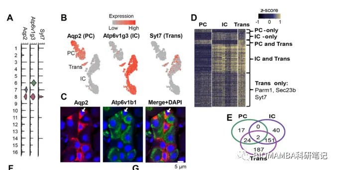
当然，细胞类型的注释也并非一帆风顺，在CDC的注释过程中，存在一部分cluster同时表达二者的marker gene（Aqp2 and Atp6v1b1），而这一部分细胞本身也存在一些诸如Parm1 and Sec23b的marker。为了探寻这部分细胞的身份，pseudotime reconstitution分析可以发现这一类群的细胞处于二者的过渡态，作者推断这一类细胞可能是受损细胞或正处于增殖状态的细胞。为了进一步验证ScRNA-Seq的结果，该团队构建了两种荧光报告鼠，分别在AQP2 (principal cells) and ATP6V1B1 (intercalated cells)基因上加上了荧光报告蛋白，最终的免疫荧光结果显示61.6%的细胞为AQP2阳性，29，2的细胞呈ATP6V1B1阳性，9.2%的细胞呈现双阳性。因此作者判断PC与过渡态细胞由IC演化而来（其中的逻辑内核容我再想想）。在figure18的分析中，作者发现这类过渡态细胞并无细胞周期相关基因的表达，因此这类细胞并没有处于增殖状态，而是处于转化、分化的状态。
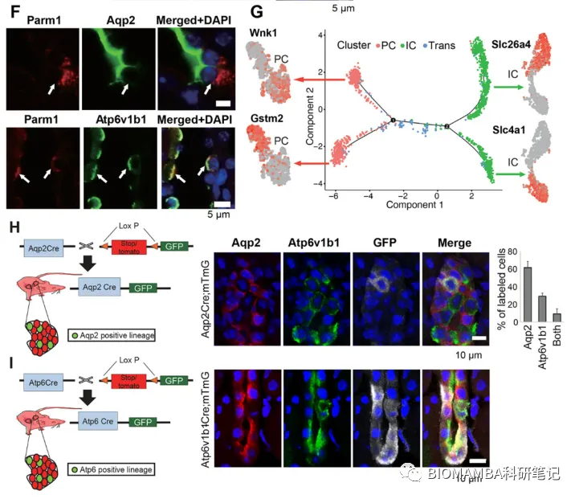
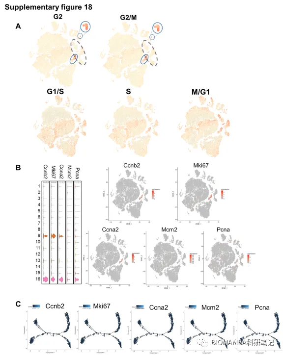
三、生物学意义
● 1、致病基因表达图谱根据此前的研究，共有29个蛋白尿相关单基因，其在各细胞类型中的表达水平如下图A所示，我们可以发现这29基因中的21均集中表达于podocyte；换句话说，足细胞的状态可能直接关乎着蛋白尿水平的高低。对于其他肾功能紊乱来说，肾小管酸中毒主要与collecting duct intercalated cells相关，血压调节主要与distal convoluted tubule及collecting ducts principal cells 相关。B图中的putative complex trait disease genes表达热图也大致反映出了以下的对应关系，这也为后期做对应疾病病理差异分析的研究者提供了思路。 CDK => PT Blood pressure GWAS=>podocyteMetabolites GWAS=>PT
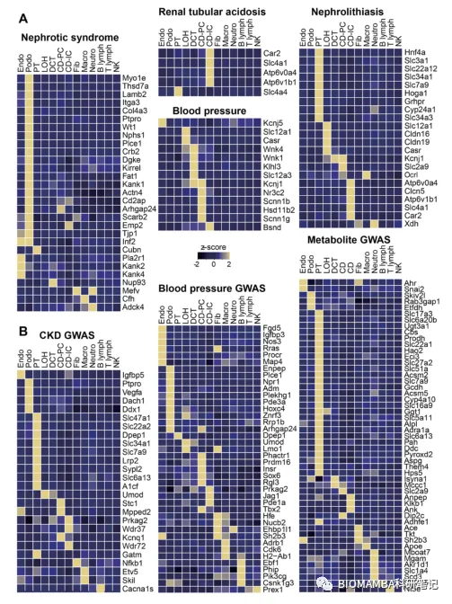
******●**** 2、PC&IC&chronic kidney diseases（CKD）**在上文我们说到，肾脏中的PC与IC会发生某种转化，而这两类细胞的表达模式也有所不同，如下图的富集分析所示，PC基因的表达富集在细胞黏附、水盐平衡方面，IC基因的表达主要富集于ATP水解/合成、偶联质子的转运、氧化还原过程。尤其其中的Notch通路在IC向PC的转化过程中被明显激活，其中Notch配体如Jag1在IC中高表达、在PC中低表达，Notch2受体与其transcriptional taget Hes1在PC中高表达，下图中的表拟时序分析与荧光染色均可重复这一现象，这表明了在转换过程中PC主要起Notch信号的接收作用。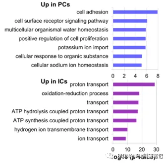
v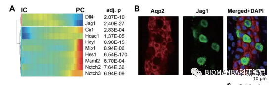
为了阐明Notch通路在IC=>PC过程中其否起到引导作用，该团队构建了Pax8rtTA/TRENICD小鼠，构建模式如下图所示。这一小鼠品系的构建可以诱导分化的肾小管导管细胞表达Notch受体的胞内保守结构域，换句话说，这步转基因操作可以帮助我们识别IC=>PC的过程发生于胚胎时期或成年期。在后续的研究中发现，随着Pax8rtTA的表达，细胞原有的表达模式被破坏，IC的marker gene表达下降（如ADGRF5）而PC的marker 上调（如ATP6V1B1），从细胞数量上来说也确实与control组有所不同，因此可初步判定IC=>PC的过程发生在成年小鼠的体内。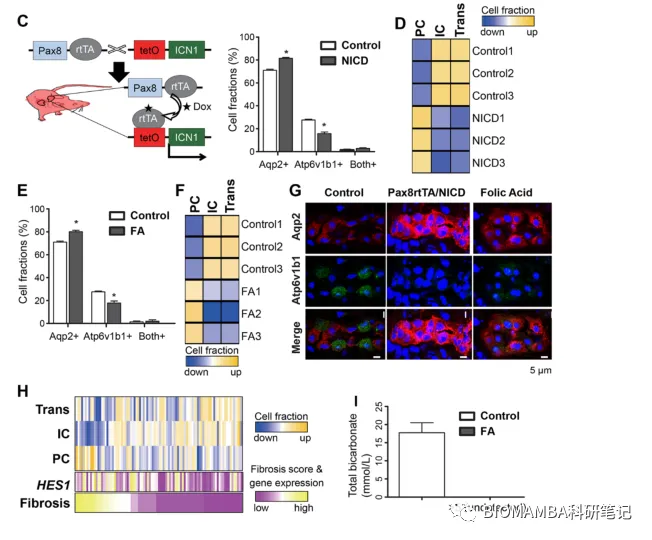
仅揭示IP与PC的转化意义不大，作者又使用叶酸构建了CKD模型，发现叶酸诱导后的小鼠，其CDC的表达模式类似于Pax8rtTA小鼠，也发生了IC=>PC的过程。串联一下，叶酸诱导Notch通路激活并引发了细胞类型转换，在细胞比例变化后，由于IC可以表达质子转运体参与泌酸，因此IC向PC的转移会引起酸中毒（血液中CO）。四、总结
曾以为这篇文章高分的缘由在于第一次完成了小鼠肾脏的单细胞测序工作，看到这里便可以明白这篇文章不仅限于此。在清晰的注释了所有的肾脏细胞类型后，作者敏锐的发现了各细胞之间数量与表达模式之间的关联从而揭示了CKD过程中肾脏细胞、分子、表型之间发生的变化，不仅为肾脏的单细胞研究奠定了基础，更是为肾病的机制研究开拓了视野。文献doi：10.1126/science.aar2131

如何联系我们
 公众号后台消息更新不及时，超过48h便不允许回复读者消息，这里给大家留一下领取资料、免费服务器的微信号 ，方便各位随时交流、提建议(科研任务繁重，回复不及时请见谅)。此外呼声一直很高的交流群 也建好了，欢迎大家入群讨论：永久免费的千人生信、科研交流群
公众号后台消息更新不及时，超过48h便不允许回复读者消息，这里给大家留一下领取资料、免费服务器的微信号 ，方便各位随时交流、提建议(科研任务繁重，回复不及时请见谅)。此外呼声一直很高的交流群 也建好了，欢迎大家入群讨论：永久免费的千人生信、科研交流群
大家可以阅读完这几篇之后添加给生信入门初学者的小贴士 如何搜索公众号过往发布内容

 您点的每个赞和在看，我都认真当成了喜欢
您点的每个赞和在看，我都认真当成了喜欢